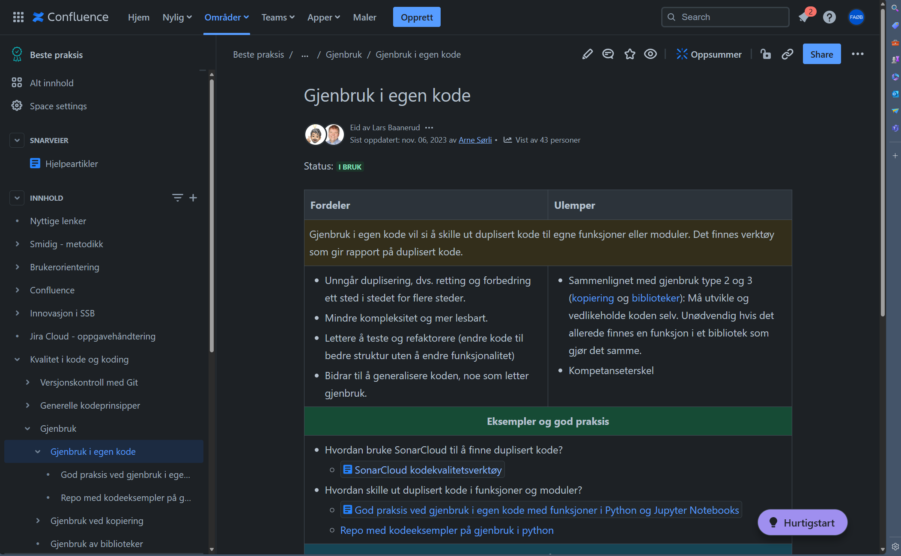
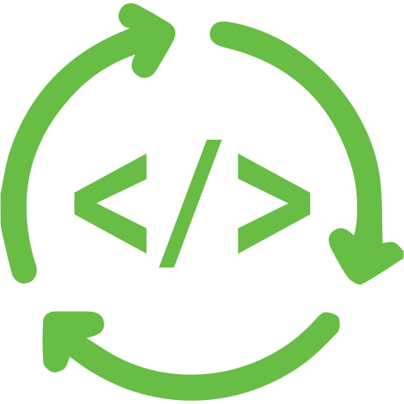

Besøk KVAKK-siden for å se på alle anbefalingene knyttet til kode og koding
🦆
🚨 Gjenbruk kan redusere feil
Kode skrevet i henhold til beste praksis skal testes og fungere som forventet. Ved å gjenbruke kode som er testet og fungerer, kan du redusere risikoen for feil.
🚀 Gjenbruk kan øke produktiviteten
Gjenbruk kan redusere utviklingstid, og fordi ⌛ == 💰 kan man oppnå reduserte kostnader
🦆 Gjenbruk kan øke kvaliteten på koden
Har du en funksjon som fungerte bra i et tidligere prosjekt? Hvorfor ikke utvide og bruke den igjen?
🧩 Gjenbruk kan redusere kompleksitet
Ved å bryte ned store oppgaver i mindre deler, dokumentere bestandelene, og sette de logisk sammen igjen, er koden mer oversiktlig for deg og dine kjære kolleger.

__init__.pyCaution
Slidene er gjenstand for grov overforenkling og inneholder definitivt feil.
“Ukentlig planlegging av vaffelfester er viktig for SSB. Vi har derfor laget et program som leser inn en CSV-fil med gjester, beregner hvor mye ingredienser som trengs og skriver ut en handleliste.”
hele_sullamitten.py
import csv
data = []
with open('$VAFFELREGISTERET/a300/statistikkfil/wk48/vaffelfester/g2024/g2024m03d14_lag42.csv') as fil:
fil_2 = csv.reader(fil, delimiter=',')
for rad in fil_2:
data.append(rad)
count = len(mydata)
import datetime
hvete, egg, melk = 0.4 * count, 3 * count 0.4 * count
with open("$VAFFELREGISTERET/a300/statistikkfil/wk48/vaffelfester/g2024/handleliste.csv", "w") as fil:
fil2 = csv.writer(fil)
fil2.writerow(["dato", "hvetemel", "egg", "melk"])
fil2.writerow([datetime.datetime.now(), hvetemel, egg, melk])hele_sullamitten.py
import csv
import datetime
FILSTI = f"$VAFFELREGISTERET/a300/statistikkfil/wk48/vaffelfester/g2024"
INNFIL = f"{FILSTI}/g2024m03d14_lag42.csv"
UTFIL = f"{FILSTI}/handleliste.csv"
gjesteliste = []
with open(INNFIL) as infil:
infil_gjesteliste = csv.reader(infil, delimiter=',')
for gjest in infil_gjesteliste:
gjesteliste.append(gjest)
antall_gjester = len(gjesteliste)
# Beregner ingredienser
hvete, egg, melk = 0.4 * antall_gjester, 3 * antall_gjester 0.4 * antall_gjester
with open(UTFIL, "w") as utfil:
utfil_handleliste = csv.writer(utfil)
utfil_handleliste.writerow(["dato", "hvetemel", "egg", "melk"])
utfil_handleliste.writerow([datetime.datetime.now(), hvetemel, egg, melk])hele_sullamitten.py
import csv
import datetime
FILSTI = f"$VAFFELREGISTERET/a300/statistikkfil/wk48/vaffelfester/g2024"
INNFIL = f"{FILSTI}/g2024m03d14_lag42.csv"
UTFIL = f"{FILSTI}/handleliste.csv"
def les_csv_fra_vaffelregisteret():
data = []
with open(INNFIL) as fil:
fil2 = csv.reader(fil, delimiter=',')
for rad in fil2:
data.append(rad)
return data
def beregn_ingredienser():
antall_gjester = len(vaffelfil)
hvete, egg, melk = 0.4 * antall_gjester, 3 * antall_gjester, 0.4 * antall_gjester
return hvete, egg, melk
def skriv_til_csv():
with open(UTFIL, "w") as utfil:
utfil_handleliste = csv.writer(utfil)
utfil_handleliste.writerow(["dato", "hvetemel", "egg", "melk"])
utfil_handleliste.writerow([datetime.datetime.now(), hvetemel, egg, melk])
def main():
vaffelfil = les_csv_fra_vaffelregisteret()
hvetemel, egg, melk = beregn_ingredienser()
skriv_til_csv()vaffelprosjekt/hele_sullamitten.py
from funksjoner import les_csv, beregn_ingredienser, skriv_til_csv
FILSTI = f"$VAFFELREGISTERET/a300/statistikkfil/wk48/vaffelfester/g2024"
INNFIL = f"{FILSTI}/g2024m03d14_lag42.csv"
UTFIL = f"{FILSTI}/handleliste.csv"
def main():
vaffelfil = les_csv_fra_vaffelregisteret()
hvetemel, egg, melk = beregn_ingredienser()
skriv_til_csv()
main()funksjoner/beregn_ingredienser.py
def beregn_ingredienser(vaffelfil, oppskrift = {
"hvete": 0.4,
"egg": 3,
"melk": 0.4,
}):
"""
Beregner mengde ingredienser ut fra en oppskrift og antall gjester.
@param vaffelfil: En liste med gjester (list)
@param oppskrift: En oppskrift på vaffelrøre (dict)
"""
handleliste = {}
antall_gjester = len(vaffelfil)
for ingrediens, mengde in oppskrift.items():
handleliste[ingrediens] = mengde * antall_gjester
return handlelistefunksjoner/beregn_ingredienser.py
def beregn_ingredienser(vaffelfil: list, oppskrift: dict = {
"hvete": 0.4,
"egg": 3,
"melk": 0.4,
}) -> dict:
"""
Beregner mengde ingredienser ut fra en oppskrift og antall gjester.
"""
handleliste = {}
antall_gjester: int = len(vaffelfil)
for ingrediens, mengde in oppskrift.items():
handleliste[ingrediens] = mengde * antall_gjester
return handlelistefrom funksjoner import les_csv, beregn_ingredienser, skriv_til_csv
FILSTI = f"$VAFFELREGISTERET/a300/statistikkfil/wk48/vaffelfester/g2024"
INNFIL = f"{FILSTI}/g2024m03d14_lag42.csv"
UTFIL = f"{FILSTI}/handleliste.csv"
def main():
vaffelfil = les_csv(infil=INNFIL)
handleliste = beregn_ingredienser(vaffelfil=vaffelfil, oppskrift={
"glutenfritt mel": 0.4,
"egg": 3,
"melk": 0.4,
})
skriv_til_csv(utfil=UTFIL, handleliste=handleliste, som_ordbok=True)
main()from funksjoner import les_csv, beregn_ingredienser, skriv_til_csv
FILSTI = f"$VAFFELREGISTERET/a300/statistikkfil/wk48/vaffelfester/g2024"
INNFIL = f"{FILSTI}/g2024m03d14_lag42.csv"
UTFIL = f"{FILSTI}/handleliste.csv"
def main():
vaffelfil = les_csv(infil=INNFIL)
handleliste = beregn_ingredienser(vaffelfil=vaffelfil, oppskrift={
"glutenfritt mel": 0.4,
"egg": 3,
"melk": 0.4,
})
skriv_til_csv(utfil=UTFIL, handleliste=handleliste, som_ordbok=True)
main()from funksjoner import les_csv, beregn_ingredienser, skriv_til_csv
FILSTI = f"$VAFFELREGISTERET/a300/statistikkfil/wk48/vaffelfester/g2024"
INNFIL = f"{FILSTI}/g2024m03d14_lag42.csv"
UTFIL = f"{FILSTI}/handleliste.csv"
def main():
vaffelfil = les_csv(infil=INNFIL)
handleliste = beregn_ingredienser(vaffelfil=vaffelfil, oppskrift={
"glutenfritt mel": 0.4,
"egg": 3,
"melk": 0.4,
})
skriv_til_csv(utfil=UTFIL, handleliste=handleliste, som_ordbok=True)
main()Jo mer man lærer, jo mer vet man